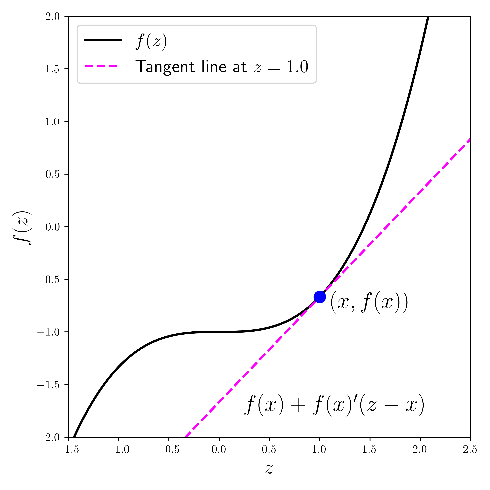
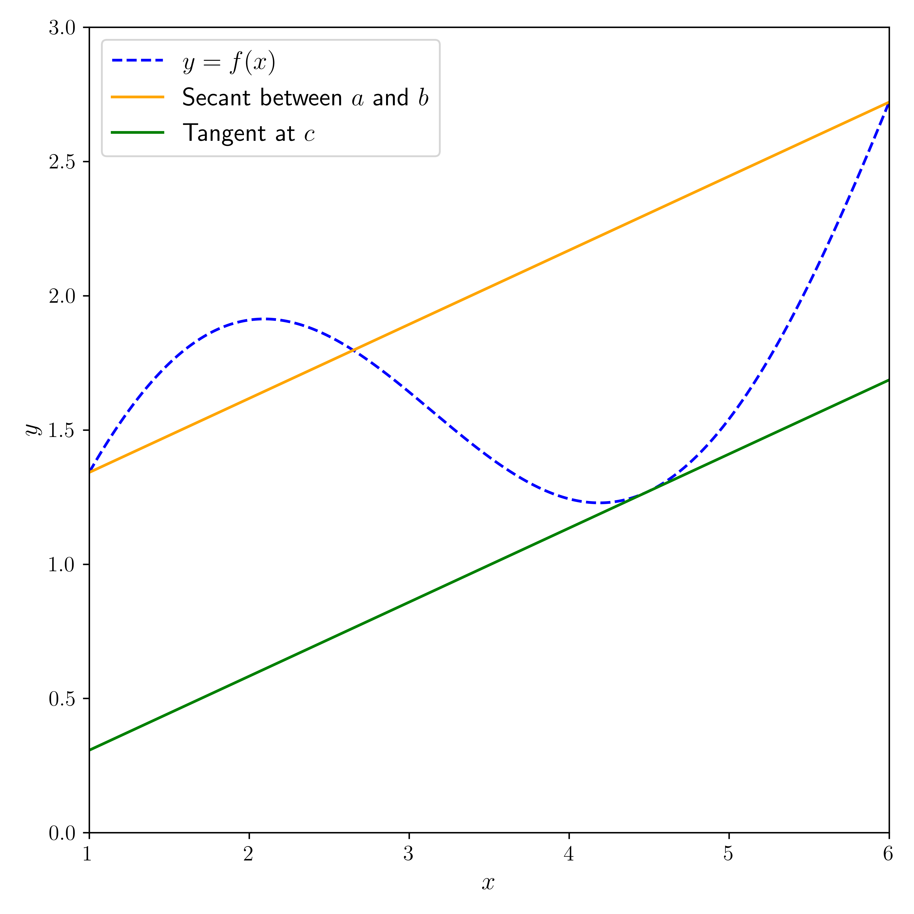

\(\newcommand{\bmu}{\boldsymbol{\mu}}\) \(\newcommand{\bSigma}{\boldsymbol{\Sigma}}\) \(\newcommand{\bfbeta}{\boldsymbol{\beta}}\) \(\newcommand{\bflambda}{\boldsymbol{\lambda}}\) \(\newcommand{\bgamma}{\boldsymbol{\gamma}}\) \(\newcommand{\bsigma}{{\boldsymbol{\sigma}}}\) \(\newcommand{\bpi}{\boldsymbol{\pi}}\) \(\newcommand{\btheta}{{\boldsymbol{\theta}}}\) \(\newcommand{\bphi}{\boldsymbol{\phi}}\) \(\newcommand{\balpha}{\boldsymbol{\alpha}}\) \(\newcommand{\blambda}{\boldsymbol{\lambda}}\) \(\renewcommand{\P}{\mathbb{P}}\) \(\newcommand{\E}{\mathbb{E}}\) \(\newcommand{\indep}{\perp\!\!\!\perp} \newcommand{\bx}{\mathbf{x}}\) \(\newcommand{\bp}{\mathbf{p}}\) \(\renewcommand{\bx}{\mathbf{x}}\) \(\newcommand{\bX}{\mathbf{X}}\) \(\newcommand{\by}{\mathbf{y}}\) \(\newcommand{\bY}{\mathbf{Y}}\) \(\newcommand{\bz}{\mathbf{z}}\) \(\newcommand{\bZ}{\mathbf{Z}}\) \(\newcommand{\bw}{\mathbf{w}}\) \(\newcommand{\bW}{\mathbf{W}}\) \(\newcommand{\bv}{\mathbf{v}}\) \(\newcommand{\bV}{\mathbf{V}}\) \(\newcommand{\bfg}{\mathbf{g}}\) \(\newcommand{\bfh}{\mathbf{h}}\) \(\newcommand{\horz}{\rule[.5ex]{2.5ex}{0.5pt}}\) \(\renewcommand{\S}{\mathcal{S}}\) \(\newcommand{\X}{\mathcal{X}}\) \(\newcommand{\var}{\mathrm{Var}}\) \(\newcommand{\pa}{\mathrm{pa}}\) \(\newcommand{\Z}{\mathcal{Z}}\) \(\newcommand{\bh}{\mathbf{h}}\) \(\newcommand{\bb}{\mathbf{b}}\) \(\newcommand{\bc}{\mathbf{c}}\) \(\newcommand{\cE}{\mathcal{E}}\) \(\newcommand{\cP}{\mathcal{P}}\) \(\newcommand{\bbeta}{\boldsymbol{\beta}}\) \(\newcommand{\bLambda}{\boldsymbol{\Lambda}}\) \(\newcommand{\cov}{\mathrm{Cov}}\) \(\newcommand{\bfk}{\mathbf{k}}\) \(\newcommand{\idx}[1]{}\) \(\newcommand{\xdi}{}\)
1.2. Background: quick refresher of matrix algebra, differential calculus, and elementary probability#
We first review a few basic mathematical concepts. In this chapter, we focus on vector and matrix algebra, some basic calculus and optimization, as well as elementary probability. Along the way, we also introduce Python, especially the library Numpy which will be used throughout.
1.2.1. Vectors and matrices#
Throughout, \(\mathbb{R}\) and \(\mathbb{R}_+\) denote respectively the real numbers and positive real numbers.
Vectors and norms For a vector
the Euclidean norm\(\idx{Euclidean norm}\xdi\) of \(\mathbf{x}\) is defined as
where
is the inner product\(\idx{inner product}\xdi\) of \(\mathbf{u}\) and \(\mathbf{v}\). This is also known as the \(\ell^2\)-norm. Throughout we use the notation \(\|\mathbf{x}\| = \|\mathbf{x}\|_2\) to indicate the \(2\)-norm of \(\mathbf{x}\) unless specified otherwise. We use \(x_i\) and \((\mathbf{x})_i\) to denote the entries of \(\mathbf{x}\). We also write \(\mathbf{x} = (x_1, \ldots, x_d) = (x_{i})_{i\in [d]}\), where \([d] := \{1,2,\ldots,d\}\).
The inner product has the following useful properties (check them!). For one, it is symmetric in the sense that
Second, it is linear in each input: for any \(\mathbf{x}_1, \mathbf{x}_2, \mathbf{x}_3 \in \mathbb{R}^d\) and \(\beta \in \mathbb{R}\), it holds that
Repeated application of the latter property implies for instance that: for any \(\mathbf{x}_1, \ldots, \mathbf{x}_m, \mathbf{y}_1, \ldots, \mathbf{y}_\ell \in \mathbb{R}^d\),
The triangle inequality for the \(\ell^2\)-norm follows from the Cauchy-Schwarz inequality, which is useful in proving many facts.
THEOREM (Cauchy-Schwarz) \(\idx{Cauchy-Schwarz inequality}\xdi\) For all \(\mathbf{u}, \mathbf{v} \in \mathbb{R}^d\)
\(\sharp\)
Given a collection of vectors \(\mathbf{u}_1,\ldots,\mathbf{u}_k \in \mathbb{R}^d\) and real numbers \(\alpha_1,\ldots,\alpha_k \in \mathbb{R}\), the linear combination of \(\mathbf{u}_\ell\)’s with coefficients \(\alpha_\ell\)’s is the vector
whose entries are
We also use \(u_{\ell, i} = (\mathbf{u}_\ell)_i\) to denote the entries of \(\mathbf{u}_\ell\).
It will be convenient to introduce special notation for common vectors. The dimension of these vectors will often be clear from the context.
The all-\(0\) vector in \(d\) dimensions is denoted by \(\mathbf{0}_d = \mathbf{0}\).
The all-\(1\) vector in \(d\) dimensions is denoted by \(\mathbf{1}_d = \mathbf{1}\).
The standard or canonical basis is denoted by \(\mathbf{e}_i\), \(i=1,\ldots,d\), where
The Euclidean distance\(\idx{Euclidean distance}\xdi\) between two vectors \(\mathbf{u}\) and \(\mathbf{v}\) in \(\mathbb{R}^d\) is the \(2\)-norm of their difference
More generally, for \(p \geq 1\), the \(\ell^p\)-norm\(\idx{lp-norm}\xdi\) of \(\mathbf{x}\) is given by
Finally the \(\ell^\infty\)-norm is defined as
There exist other norms. Formally:
DEFINITION (Norm) \(\idx{norm}\xdi\) A norm is a function \(\ell\) from \(\mathbb{R}^d\) to \(\mathbb{R}_+\) that satisfies for all \(a \in \mathbb{R}\), \(\mathbf{u}, \mathbf{v} \in \mathbb{R}^d\)
(Absolute homogeneity): \(\idx{absolute homogeneity}\xdi\) \(\ell(a \mathbf{u}) = |a| \ell(\mathbf{u})\)
(Triangle inequality): \(\idx{triangle inequality}\xdi\) \(\ell(\mathbf{u}+\mathbf{v}) \leq \ell(\mathbf{u}) + \ell(\mathbf{v})\)
(Point-separating): \(\idx{point-separating property}\xdi\) \(\ell(\mathbf{u}) = 0\) implies \(\mathbf{u} =0\).
\(\natural\)
NUMERICAL CORNER: In Numpy, a vector is defined as a 1d array. We first must import the Numpy package, which is often abbreviated by np.
import numpy as np
u = np.array([1., 3., 5. ,7.])
print(u)
[1. 3. 5. 7.]
We access the entries of u as follows, where note that indexing in Numpy starts at \(0\).
print(u[0])
print(u[1])
1.0
3.0
To obtain the norm of a vector, we can use the function linalg.norm, which requires the numpy.linalg package (often abbreviated as LA):
from numpy import linalg as LA
LA.norm(u)
9.16515138991168
which we check next “by hand”
np.sqrt(np.sum(u ** 2))
9.16515138991168
In Numpy, ** indicates element-wise exponentiation.
TRY IT! Compute the inner product of \(u = (1,2,3,4)\) and \(v = (5, 4, 3, 2)\) without using the function np.dot. Hint: The product of two real numbers \(a\) and \(b\) is a * b. (Open in Colab)
u = np.array([1., 2., 3. ,4.])
# EDIT THIS LINE: define v
# EDIT THIS LINE: compute the inner product between u and v
\(\unlhd\)
Matrices For an \(n \times m\) matrix \(A \in \mathbb{R}^{n \times m}\) with real entries, we denote by \(A_{i,j}\) or \(A_{ij}\) its entry in row \(i\) and column \(j\) (unless specified otherwise). We also refer to a matrix as the collection of all of its entries as follows
We occasionally simplify the notation to \(A = (A_{ij})_{i,j}\) when the range of the indices is clear from context. We use the notation
to indicate the \(i\)-th row of \(A\) – as a row vector, i.e., a matrix with a single row – and similarly
for the \(j\)-th column of \(A\) – as a column vector, i.e., a matrix with a single column.
EXAMPLE: Suppose
Then the second row and column are respectively
\(\lhd\)
Matrices can be multiplied by scalars: let \(A \in \mathbb{R}^{n\times m} = (A_{ij})_{i\in [n],j \in [m]}\) and \(\gamma \in \mathbb{R}\), then \(\gamma A = (\gamma A_{ij})_{i\in [n],j \in [m]}\) is the matrix whose entries are multiplied by \(\gamma\). Matrices can also be added to each other – provided they have the same size: let \(A \in \mathbb{R}^{n\times m} = (A_{ij})_{i\in [n],j \in [m]}\) and \(B \in \mathbb{R}^{n\times m} = (B_{ij})_{i\in [n],j \in [m]}\), then \(C = A + B\) is the matrix \(C = (C_{ij})_{i\in [n],j \in [m]}\) where \(C_{ij} = A_{ij} + B_{ij}\) for all \(i,j\).
Recall that the transpose\(\idx{transpose}\xdi\) \(A^T\) of a matrix \(A \in \mathbb{R}^{n\times m}\) is defined as the matrix in \(\mathbb{R}^{m\times n}\) that switches the row and column indices of \(A\), that is, its entries are
Figure: Illustration of transposition (Source)
{kind=link}

\(\bowtie\)
EXAMPLE: Suppose again
Then its transpose is
\(\lhd\)
We list some useful properties of the transpose (check them!). For any \(\gamma \in \mathbb{R}\) and \(A, B \in \mathbb{R}^{n \times m}\):
a) \((A^T)^T = A\)
b) \((\gamma A + B)^T = \gamma A^T + B^T\)
DEFINITION (Symmetric Matrix) \(\idx{symmetric matrix}\xdi\) A square matrix \(B \in \mathbb{R}^{n \times n}\) is symmetric if \(B^T = B\). \(\natural\)
The transpose in particular can be used to turn a column vector into a row vector and vice versa. That is, if \(\mathbf{b} = (b_1, b_2, \ldots,b_n) \in \mathbb{R}^n\) is a column vector, then \(\mathbf{b}^T = \begin{pmatrix} b_1 & b_2 & \cdots & b_n \end{pmatrix}\) is the corresponding row vector. Note the absence of commas in the latter. For instance,
is the squared Euclidean norm of \(\mathbf{b}\).
NUMERICAL CORNER: We will often work with collections of \(n\) vectors \(\mathbf{x}_1, \ldots, \mathbf{x}_n\) in \(\mathbb{R}^d\) and it will be convenient to stack them up into a matrix
To create a matrix out of two vectors, we use the function numpy.stack.
u = np.array([1., 3., 5., 7.])
v = np.array([2., 4., 6., 8.])
X = np.stack((u,v),axis=0)
print(X)
[[1. 3. 5. 7.]
[2. 4. 6. 8.]]
Quoting the documentation:
The axis parameter specifies the index of the new axis in the dimensions of the result. For example, if axis=0 it will be the first dimension and if axis=-1 it will be the last dimension.
Alternatively, we can define the same matrix as follows.
Y = np.array([[1., 3., 5., 7.],[2., 4., 6., 8.]])
print(Y)
[[1. 3. 5. 7.]
[2. 4. 6. 8.]]
We access the entries as follows.
print(Y[0,0])
print(Y[0,1])
1.0
3.0
\(\unlhd\)
As for vectors, it will be convenient to introduce a special notation for common matrices. The dimensions are sometimes omitted when clear from context.
The all-\(0\) matrix of dimension \(m \times n\) is denoted by \(\mathbf{0}_{m \times n} = \mathbf{0}\).
The all-\(1\) matrix of dimension \(m \times n\) is denoted by \(J_{m \times n} = J\).
A square diagonal matrix\(\idx{diagonal matrix}\xdi\) \(A = (A_{ij}) \in \mathbb{R}^{n \times n}\) is a matrix that satisfies \(A_{ij} = 0\) for all \(i \neq j\). We denote by \(\mathrm{diag}(\lambda_1,\ldots,\lambda_n)\) the diagonal matrix with diagonal entries \(\lambda_1,\ldots,\lambda_n\).
The identity matrix\(\idx{identity matrix}\xdi\) of dimension \(n \times n\) is denoted by \(I_{n \times n} = I\). Specifically, this the matrix whose \(i\)-th column is the standard basis vector \(\mathbf{e}_i\), \(i=1,\ldots,n\). Put differently, it is the square diagonal matrix with ones on the diagonal.
Matrix-vector product Recall that, for a matrix \(A = (A_{ij})_{i\in [n],j \in [m]} \in \mathbb{R}^{n \times m}\) and a column vector \(\mathbf{b} = (b_{i})_{i\in [m]} \in \mathbb{R}^{m}\), the matrix-vector product \(\mathbf{c} = A \mathbf{b}\) is the vector with entries
In vector form,
that is, \(A \mathbf{b}\) is a linear combination of the columns of \(A\) where the coefficients are the entries of \(\mathbf{b}\). Matrix-vector products are linear in the following sense (check it!): for any \(\gamma \in \mathbb{R}\) and \(\mathbf{b}_1, \mathbf{b}_2 \in \mathbb{R}^m\)
EXAMPLE: (continued) Consider the column vector \(\mathbf{b} = (1, 0)\). Then
which can also be written in vector form as
\(\lhd\)
Matrix-matrix product Recall that, for matrices \(A \in \mathbb{R}^{n \times k}\) and \(B \in \mathbb{R}^{k \times m}\), their matrix product is defined as the matrix \(C = AB \in \mathbb{R}^{n \times m}\) whose entries are
The number of columns of \(A\) and the number of rows of \(B\) must match. There are many different ways to view this formula that are helpful in interpreting matrix-matrix products in different contexts.
First, we observe that the entry \(C_{i\ell}\) is an inner product of the \(i\)-th row of \(A\) and of the \(\ell\)-th column of \(B\). That is,
In matrix form,
Alternatively,
where we specify a matrix by the collection of its columns. Put differently, by the matrix-vector product formula, the \(j\)-th column of the product \(AB\) is a linear combination of the columns of \(A\) where the coefficients are the entries in column \(j\) of \(B\)
Similarly, the \(i\)-th row of the product \(AB\) is a linear combination of the rows of \(B\) where the coefficients are the entries in row \(i\) of \(A\)
EXAMPLE: Recall that if we think of a vector \(\mathbf{b} \in \mathbb{R}^n\) as a column vector, then its transpose \(\mathbf{b}^T\) is a row vector. We previously showed that \(\mathbf{b}^T \mathbf{b} = \sum_{i=1}^n b_i^2\) is a scalar, i.e., a real number. This time, we compute \(\mathbf{b} \mathbf{b}^T\). Let us first make sure that the dimensions fit. Seeing these vectors as matrices, we have \(\mathbf{b} \in \mathbb{R}^{n\times 1}\) and \(\mathbf{b}^T \in \mathbb{R}^{1\times n}\). So indeed we can multiply them together since the number of columns of the first matrix matches the number of rows of the second one. What are the dimensions of the final product? Taking the number of rows of the first matrix and the number of columns of the second one, we see that it is \(n \times n\).
Finally we get
That is, \((\mathbf{b} \mathbf{b}^T)_{i,j} = b_i b_j\). \(\lhd\)
We list some useful properties of the matrix-matrix product (check them!). For any \(\gamma \in \mathbb{R}\), \(A, B \in \mathbb{R}^{n \times m}\) and \(C \in \mathbb{R}^{m \times \ell}\):
a) \((\gamma A)B = A (\gamma B) = \gamma A B\)
b) \((A + B)C = AC + BC\)
c) \((BC)^T = C^T B^T\)
KNOWLEDGE CHECK: Let \(A \in \mathbb{R}^{n \times m}\), \(B \in \mathbb{R}^{m \times n}\), \(C \in \mathbb{R}^{n \times \ell}\), and \(D \in \mathbb{R}^{\ell \times n}\). Determine the dimensions of the transpose of the matrix:
a) \(m \times m\)
b) \(n \times n\)
c) \(m \times n\)
d) \(n \times m\)
e) The matrix is not well-defined.
\(\checkmark\)
Block matrices It will be convenient to introduce block matrices. First, for a vector \(\mathbf{x} \in \mathbb{R}^n\), we write \(\mathbf{x} = (\mathbf{x}_1, \mathbf{x}_2)\), where \(\mathbf{x}_1 \in \mathbb{R}^{n_1}\) and \(\mathbf{x}_2 \in \mathbb{R}^{n_2}\) with \(n_1 + n_2 = n\), to indicate that \(\mathbf{x}\) is partitioned into two blocks: \(\mathbf{x}_1\) corresponds to the first \(n_1\) coordinates of \(\mathbf{x}\) while \(\mathbf{x}_2\) corresponds to the following \(n_2\) coordinates.
More generally, a block matrix\(\idx{block matrix}\xdi\) is a partitioning of the rows and columns of a matrix of the form
where \(A \in \mathbb{R}^{n \times m}\), \(A_{ij} \in \mathbb{R}^{n_i \times m_j}\) for \(i,j = 1, 2\) with the conditions \(n_1 + n_2 = n\) and \(m_1 + m_2 = m\). One can also consider larger numbers of blocks.
Block matrices have a convenient algebra that mimics the usual matrix algebra. Specifically, if \(B_{ij} \in \mathbb{R}^{m_i \times p_j}\) for \(i,j = 1, 2\), then it holds that
Observe that the block sizes of \(A\) and \(B\) must match for this formula to make sense. You can convince yourself of this identity by trying it on a simple example.
Warning: While the formula is similar to the usual matrix product, the order of multiplication matters because the blocks are matrices and they do not in general commute!
Matrix norms We will also need notions of matrix norm\(\idx{matrix norm}\xdi\). A natural way to define a norm for matrices is to notice that an \(n \times m\) matrix \(A\) can be thought of as an \(nm\) vector, with one element for each entry of \(A\). Indeed, addition and scalar multiplication work exactly in the same way. Hence, we can define the \(2\)-norm of a matrix in terms of the sum of its squared entries. (We will encounter other matrix norms later in the course.)
DEFINITION (Frobenius Norm) \(\idx{Frobenius norm}\xdi\) The Frobenius norm of an \(n \times m\) matrix \(A \in \mathbb{R}^{n \times m}\) is defined as
\(\natural\)
Using the row notation, we see that the square of the Frobenius norm can be written as the sum of the squared Euclidean norms of the rows \(\|A\|_F^2 = \sum_{i=1}^n \|A_{i,\cdot}\|^2\). Similarly in terms of the columns \(A_{\cdot,j}\), \(j=1,\ldots,m\), of \(A\) we have \(\|A\|_F^2 = \sum_{j=1}^m \|A_{\cdot,j}\|^2\).
For two matrices \(A, B \in \mathbb{R}^{n \times m}\), the Frobenius norm of their difference \(\|A - B\|_F\) can be interpreted as a distance between \(A\) and \(B\), that is, a measure of how dissimilar they are.
It can be shown (try it!) using the Cauchy-Schwarz inequality that for any \(A, B\) for which \(AB\) is well-defined it holds that
This applies in particular when \(B\) is a column vector, in which case \(\|B\|_F\) is its Euclidean norm.
NUMERICAL CORNER: In Numpy, the Frobenius norm of a matrix can be computed using the function numpy.linalg.norm.
A = np.array([[1., 0.],[0., 1.],[0., 0.]])
print(A)
[[1. 0.]
[0. 1.]
[0. 0.]]
LA.norm(A)
1.4142135623730951
\(\unlhd\)
Quadratic forms Let \(B \in \mathbb{R}^{n \times n}\) be a square matrix. The associated quadratic form\(\idx{quadratic form}\xdi\)
defined for any \(\mathbf{z} = (z_1,\ldots,z_n)\), will make many appearances throughout.
A form is a homogeneous polynomial \(f(\mathbf{z})\), viewed as a function of \(\mathbf{z}\). By homogeneous, we mean that for any \(\mathbf{z} \in \mathbb{R}^n\) and any scalar \(\alpha \in \mathbb{R}\)
for some integer \(k\) that is called the degree of homogeneity. (Note that this is different from the absolute homogeneity of norms.) When \(k=2\), we refer to it as a quadratic form. Let us check that \(\langle \mathbf{z}, B \mathbf{z} \rangle\) indeed satisfies these properties. The alternative expression \(\sum_{i=1}^n \sum_{j=1}^n z_i B_{i,j} z_j\) makes it clear that it is a polynomial in the variables \(z_1,\ldots,z_n\). Moreover, for any \(\alpha \in \mathbb{R}\), by using linearity multiple times
In particular, the following property of matrices will play an important role. It is defined in terms of the associated quadratic form.
DEFINITION (Positive Semidefinite Matrix) \(\idx{positive semidefinite matrix}\xdi\) A symmetric matrix \(B \in \mathbb{R}^{n \times n}\) is positive semidefinite if
We also write \(B \succeq 0\) in that case. If the inequality above is strict, we say that \(B\) is positive definite, in which case we write \(B \succ 0\). \(\natural\)
We will see an important example later in this section.
1.2.2. Differential calculus#
Next, we review some basic concepts from differential calculus. We focus here on definitions and results relevant to optimization theory, which plays a central role in data science.
Limits and continuity The open \(r\)-ball around \(\mathbf{x} \in \mathbb{R}^d\) is the set of points within Euclidean distance \(r\) of \(\mathbf{x}\), that is,
A point \(\mathbf{x} \in \mathbb{R}^d\) is an interior point of a set \(A \subseteq \mathbb{R}^d\) if there exists an \(r > 0\) such that \(B_r(\mathbf{x}) \subseteq A\). A set \(A\) is open\(\idx{open set}\xdi\) if it consists entirely of interior points. A point \(\mathbf{x} \in \mathbb{R}^d\) is a limit point of a set \(A \subseteq \mathbb{R}^d\) if every open ball around \(\mathbf{x}\) contains an element \(\mathbf{a}\) of \(A\) such that \(\mathbf{a} \neq \mathbf{x}\). A set \(A\) is closed\(\idx{closed set}\xdi\) if every limit point of \(A\) belongs to \(A\). Or, put differently, a set is closed if its complement is open. A set \(A \subseteq \mathbb{R}^d\) is bounded if there exists an \(r > 0\) such that \(A \subseteq B_r(\mathbf{0})\), where \(\mathbf{0} = (0,\ldots,0)^T\).
Figure: Illustration of an open ball of radius \(\varepsilon\) around point \(x\). (Source)
{kind=link}

\(\bowtie\)
DEFINITION (Limits of a Function) Let \(f: D \to \mathbb{R}\) be a real-valued function on \(D \subseteq \mathbb{R}^d\). Then \(f\) is said to have a limit \(L \in \mathbb{R}\) as \(\mathbf{x}\) approaches \(\mathbf{a}\) if: for any \(\varepsilon > 0\), there exists a \(\delta > 0\) such that \(|f(\mathbf{x}) - L| < \varepsilon\) for all \(\mathbf{x} \in D \cap B_\delta(\mathbf{a})\setminus \{\mathbf{a}\}\). This is written as
\(\natural\)
Note that we explicitly exclude \(\mathbf{a}\) itself from having to satisfy the condition \(|f(\mathbf{x}) - L| < \varepsilon\). In particular, we may have \(f(\mathbf{a}) \neq L\). We also do not restrict \(\mathbf{a}\) to be in \(D\).
DEFINITION (Continuous Function) \(\idx{continuous function}\xdi\) Let \(f: D \to \mathbb{R}\) be a real-valued function on \(D \subseteq \mathbb{R}^d\). Then \(f\) is said to be continuous at \(\mathbf{a} \in D\) if
\(\natural\)
Figure: A continuous function. E.g., in a small neighborhood around \(2\), the function varies only slightly. (Source)
{kind=link}

\(\bowtie\)
We will not prove the following fundamental analysis result, which will be used repeatedly in this course. (See e.g. Wikipedia for a sketch of the proof.) Suppose \(f : D \to \mathbb{R}\) is defined on a set \(D \subseteq \mathbb{R}^d\). We say that \(f\) attains a maximum value \(M\) at \(\mathbf{z}^*\) if \(f(\mathbf{z}^*) = M\) and \(M \geq f(\mathbf{x})\) for all \(\mathbf{x} \in D\). Similarly, we say \(f\) attains a minimum value \(m\) at \(\mathbf{z}_*\) if \(f(\mathbf{z}_*) = m\) and \(m \geq f(\mathbf{x})\) for all \(\mathbf{x} \in D\).
THEOREM (Extreme Value) \(\idx{extreme value theorem}\xdi\) Let \(f : D \to \mathbb{R}\) be a real-valued, continuous function on a nonempty, closed, bounded set \(D\subseteq \mathbb{R}^d\). Then \(f\) attains a maximum and a minimum on \(D\). \(\sharp\)
Derivatives We move on to derivatives. Recall that the derivative of a function of a real variable is the rate of change of the function with respect to the change in the variable. It gives the slope of the tangent line at a point. Formally:
DEFINITION (Derivative) \(\idx{derivative}\xdi\) Let \(f : D \to \mathbb{R}\) where \(D \subseteq \mathbb{R}\) and let \(x_0 \in D\) be an interior point of \(D\). The derivative of \(f\) at \(x_0\) is
provided the limit exists. \(\natural\)
Figure: The derivative at the blue point is the slope of the line tangent the curve there (with help from ChatGPT; inspired by Source).
{kind=link}

\(\bowtie\)
The following lemma encapsulates a key insight about the derivative of \(f\) at \(x_0\): it tells us where to find smaller values.
LEMMA (Descent Direction) \(\idx{descent direction lemma}\xdi\) Let \(f : D \to \mathbb{R}\) with \(D \subseteq \mathbb{R}\) and let \(x_0 \in D\) be an interior point of \(D\) where \(f'(x_0)\) exists. If \(f'(x_0) > 0\), then there is an open ball \(B_\delta(x_0) \subseteq D\) around \(x_0\) such that for each \(x\) in \(B_\delta(x_0)\):
a) \(f(x) > f(x_0)\) if \(x > x_0\),
b) \(f(x) < f(x_0)\) if \(x < x_0\).
If instead \(f'(x_0) < 0\), the opposite holds. \(\flat\)
Proof idea: It follows from the definition of the derivative by taking \(\varepsilon\) small enough that \(f'(x_0) - \varepsilon > 0\).
Proof: Take \(\varepsilon = f'(x_0)/2\). By definition of the derivative, there is \(\delta > 0\) such that
for all \(0 < h < \delta\). Rearranging gives
by our choice of \(\varepsilon\). The other direction is similar. \(\square\)
One implication of the Descent Direction Lemma is the Mean Value Theorem, which will lead us later to Taylor’s Theorem. First, an important special case:
THEOREM (Rolle) \(\idx{Rolle's theorem}\xdi\) Let \(f : [a,b] \to \mathbb{R}\) be a continuous function and assume that its derivative exists on \((a,b)\). If \(f(a) = f(b)\) then there is \(a < c < b\) such that \(f'(c) = 0\). \(\sharp\)
Proof idea: Look at an extremum and use the Descent Direction Lemma to get a contradiction.
Proof: If \(f(x) = f(a)\) for all \(x \in (a, b)\), then \(f'(x) = 0\) on \((a, b)\) and we are done. So assume there is \(y \in (a, b)\) such that \(f(y) \neq f(a)\). Assume without loss of generality that \(f(y) > f(a)\) (otherwise consider the function \(-f\)). By the Extreme Value Theorem, \(f\) attains a maximum value at some \(c \in [a,b]\). By our assumption, \(a\) and \(b\) cannot be the location of the maximum and it must be that \(c \in (a, b)\).
We claim that \(f'(c) = 0\). We argue by contradiction. Suppose \(f'(c) > 0\). By the Descent Direction Lemma, there is a \(\delta > 0\) such that \(f(x) > f(c)\) for some \(x \in B_\delta(c)\), a contradiction. A similar argument holds if \(f'(c) < 0\). That concludes the proof. \(\square\)
THEOREM (Mean Value) \(\idx{mean value theorem}\xdi\) Let \(f : [a,b] \to \mathbb{R}\) be a continuous function and assume that its derivative exists on \((a,b)\). Then there is \(a < c < b\) such that
or put differently
\(\sharp\)
Figure: Illustration of the Mean Value Theorem (with help from ChatGPT; inspired by (Source))
{kind=link}

\(\bowtie\)
Proof idea: Apply Rolle’s Theorem to
Proof: Let \(\phi(x) = f(x) - f(a) - \frac{f(b) - f(a)}{b - a} (x-a)\). Note that \(\phi(a) = \phi(b) = 0\) and \(\phi'(x) = f'(x) - \frac{f(b) - f(a)}{b - a}\) for all \(x \in (a, b)\). Thus, by Rolle’s Theorem, there is \(c \in (a, b)\) such that \(\phi'(c) = 0\). That implies \(\frac{f(b) - f(a)}{b - a} = \phi'(c)\) and plugging into \(\phi(b)\) gives the result. \(\square\)
We will also use Taylor’s Theorem, a generalization of the Mean Value Theorem that provides a polynomial approximation to a function around a point. We will restrict ourselves to the case of a linear approximation with second-order error term, which will suffice for our purposes.
THEOREM (Taylor) \(\idx{Taylor's theorem}\xdi\) Let \(f: D \to \mathbb{R}\) where \(D \subseteq \mathbb{R}\). Suppose \(f\) has a continuous derivative on \([a,b]\) and that its second derivative exists on \((a,b)\). Then for any \(x \in [a, b]\)
for some \(a < \xi < x\). \(\sharp\)
Proof idea: The Mean Value Theorem implies that there is \(a < \xi< x\) such that
One way to think of the proof of that result is the following: we constructed an affine function that agrees with \(f\) at \(a\) and \(x\), then used Rolle’s Theorem to express the coefficient of the linear term using \(f'\). Here we do the same with a polynomial of degree \(2\). But we now have an extra degree of freedom in choosing this polynomial. Because we are looking for a good approximation close to \(a\), we choose to make the first derivative at \(a\) also agree. Applying Rolle’s Theorem twice gives the claim.
Proof: Let
We choose the \(\alpha_i\)’s so that \(P(a) = f(a)\), \(P'(a) = f'(a)\), and \(P(x) = f(x)\). The first two lead to the conditions
Let \(\phi(t) = f(t) - P(t)\). By construction \(\phi(a) = \phi(x) = 0\). By Rolle’s Theorem, there is a \(\xi' \in (a, x)\) such that \(\phi'(\xi') = 0\). Moreover, \(\phi'(a) = 0\). Hence we can apply Rolle’s Theorem again – this time to \(\phi'\) on \([a, \xi']\). It implies that there is \(\xi \in (a, \xi')\) such that \(\phi''(\xi) = 0\).
The second derivative of \(\phi\) at \(\xi\) is
so \(\alpha_2 = f''(\xi)/2\). Plugging into \(P\) and using \(\phi(x) = 0\) gives the claim. \(\square\)
Optimization As we mentioned before, optimization problems play a ubiquitous role in data science. Here we look at unconstrained optimization problems, that is, problems of the form:
where \(f : \mathbb{R}^d \to \mathbb{R}\).
Ideally, we would like to find a global minimizer to the optimization problem above.
DEFINITION (Global Minimizer) \(\idx{global minimizer or maximizer}\xdi\) Let \(f : \mathbb{R}^d \to \mathbb{R}\). The point \(\mathbf{x}^* \in \mathbb{R}^d\) is a global minimizer of \(f\) over \(\mathbb{R}^d\) if
\(\natural\)
Global maximizers are defined similarly.
NUMERICAL CORNER: The function \(f(x) = x^2\) over \(\mathbb{R}\) has a global minimizer at \(x^* = 0\). Indeed, we clearly have \(f(x) \geq 0\) for all \(x\) while \(f(0) = 0\). To plot the function, we use the Matplotlib package, and specifically its function matplotlib.pyplot.plot. We also use the function numpy.linspace to create an array of evenly spaced numbers where we evaluate \(f\).
import matplotlib.pyplot as plt
x = np.linspace(-2,2,100)
y = x ** 2
plt.plot(x, y, c='k')
plt.ylim(-0.25,4.25)
plt.show()
The function \(f(x) = e^x\) over \(\mathbb{R}\) does not have a global minimizer. Indeed, \(f(x) > 0\) but no \(x\) achieves \(0\). And, for any \(m > 0\), there is \(x\) small enough such that \(f(x) < m\). Note that \(\mathbb{R}\) is not bounded, therefore the Extreme Value Theorem does not apply here.
x = np.linspace(-2,2,100)
y = np.exp(x)
plt.plot(x, y, c='k')
plt.ylim(-0.25,4.25)
plt.show()
The function \(f(x) = (x+1)^2 (x-1)^2\) over \(\mathbb{R}\) has two global minimizers at \(x^* = -1\) and \(x^{**} = 1\). Indeed, \(f(x) \geq 0\) and \(f(x) = 0\) if and only \(x = x^*\) or \(x = x^{**}\).
x = np.linspace(-2,2,100)
y = ((x+1)**2) * ((x-1)**2)
plt.plot(x,y,c='k')
plt.ylim(-0.25,4.25)
plt.show()
\(\unlhd\)
In general, finding a global minimizer and certifying that one has been found can be difficult unless some special structure is present. Therefore weaker notions of solution have been introduced.
DEFINITION (Local Minimizer) \(\idx{local minimizer or maximizer}\xdi\) Let \(f : \mathbb{R}^d \to \mathbb{R}\). The point \(\mathbf{x}^* \in \mathbb{R}^d\) is a local minimizer of \(f\) over \(\mathbb{R}^d\) if there is \(\delta > 0\) such that
If the inequality is strict, we say that \(\mathbf{x}^*\) is a strict local minimizer. \(\natural\)
In words, \(\mathbf{x}^*\) is a local minimizer if there is open ball around \(\mathbf{x}^*\) where it attains the minimum value. Local maximizers are defined similarly. In the final example above, \(x = 0\) is a local maximizer.
Figure: Local and global optima. (Source)
{kind=link}

\(\bowtie\)
Local minimizers can be characterized in terms of derivatives.
THEOREM (First-Order Necessary Optimality Condition) \(\idx{first-order necessary optimality condition}\xdi\) Let \(f : \mathbb{R} \to \mathbb{R}\) be differentiable (i.e., its derivative exists) on \(\mathbb{R}\). If \(x_0\) is a local minimizer, then \(f'(x_0) = 0\). \(\sharp\)
Proof: We argue by contradiction. Suppose that \(f'(x_0) \neq 0\). Say \(f'(x_0) > 0\) (the other case being similar). By the Descent Direction Lemma, there is a \(\delta > 0\) such that, for each \(x\) in \(B_\delta(x_0)\), \(f(x) < f(x_0)\) if \(x < x_0\). So every open ball around \(x_0\) has a point achieving a smaller value than \(f(x_0)\). Thus \(x_0\) is not a local minimizer, a contradiction. So it must be that \(f'(x_0) = 0\). \(\square\)
Functions of several variables The previous condition generalizes naturally to functions of several variables. The derivative is replaced by the gradient.
DEFINITION (Partial Derivative) \(\idx{partial derivative}\xdi\) Let \(f : D \to \mathbb{R}\) where \(D \subseteq \mathbb{R}^d\) and let \(\mathbf{x}_0 = (x_{0,1},\ldots,x_{0,d}) \in D\) be an interior point of \(D\). The partial derivative of \(f\) at \(\mathbf{x}_0\) with respect to \(x_i\) is
provided the limit exists. If \(\frac{\partial f (\mathbf{x}_0)}{\partial x_i}\) exists and is continuous in an open ball around \(\mathbf{x}_0\) for all \(i\), then we say that \(f\) continuously differentiable at \(\mathbf{x}_0\). \(\natural\)
DEFINITION (Gradient) \(\idx{gradient}\xdi\) Let \(f : D \to \mathbb{R}\) where \(D \subseteq \mathbb{R}^d\) and let \(\mathbf{x}_0 \in D\) be an interior point of \(D\). Assume \(f\) is continuously differentiable at \(\mathbf{x}_0\). The (column) vector
is called the gradient of \(f\) at \(\mathbf{x}_0\). \(\natural\)
Note that the gradient is itself a function of \(\mathbf{x}\). In fact, unlike \(f\), it is a vector-valued function.
We generalize the Descent Direction Lemma to the multivariable case. We first need to define what a descent direction is.
DEFINITION (Descent Direction) \(\idx{descent direction}\xdi\) Let \(f : \mathbb{R}^d \to \mathbb{R}\). A vector \(\mathbf{v}\) is a descent direction for \(f\) at \(\mathbf{x}_0\) if there is \(\alpha^* > 0\) such that
\(\natural\)
LEMMA (Descent Direction) \(\idx{descent direction lemma}\xdi\) Let \(f : \mathbb{R}^d \to \mathbb{R}\) be continuously differentiable at \(\mathbf{x}_0\) and assume that \(\nabla f(\mathbf{x}_0) \neq 0\). Then \(f\) has a descent direction at \(\mathbf{x}_0\). \(\flat\)
THEOREM (First-Order Necessary Optimality Condition) \(\idx{first-order necessary optimality condition}\xdi\) Let \(f : \mathbb{R}^d \to \mathbb{R}\) be continuously differentiable on \(\mathbb{R}^d\). If \(\mathbf{x}_0\) is a local minimizer, then \(\nabla f(\mathbf{x}_0) = \mathbf{0}\). \(\sharp\)
1.2.3. Probability#
Finally, we review a few key definitions and results from probability theory.
Expectation, variance and Chebyshev’s inequality Recall that the expectation (or mean) of a function \(h\) of a discrete random variable \(X\) taking values in \(\mathcal{X}\) is given by
where \(p_X(x) = \mathbb{P}[X = x]\) is the probability mass function (PMF)\(\idx{probability mass function}\xdi\) of \(X\). In the continuous case, we have
if \(f_X\) is the probability density function (PDF)\(\idx{probability density function}\xdi\) of \(X\).
These definitions extend to functions of multiple variables by using instead the joint PMF or PDF.
We sometimes denote the expectation of \(X\) by \(\mu_X\).
Two key properties of the expectation are:
linearity, that is,
monotonicity, that is, if \(h_1(x) \leq h_2(x)\) for all \(x\) then
The variance\(\idx{variance}\xdi\) of a real-valued random variable \(X\) is
and its standard deviation is \(\sigma_X = \sqrt{\mathrm{Var}[X]}\). The variance does not satisfy linearity, but we have the following property
The standard deviation is a measure of the typical deviation of \(X\) around its mean, that is, of the spread of the distribution.
A quantitative version of this statement is given by Chebyshev’s Inequality.
THEOREM (Chebyshev) \(\idx{Chebyshev's inequality}\xdi\) For a random variable \(X\) with finite variance, we have for any \(\alpha > 0\)
\(\sharp\)
The intuition is the following: if the expected squared deviation from the mean is small, then the absolute deviation from the mean is unlikely to be large.
To formalize this we prove a more general inequality, Makov’s Inequality. In words, if a non-negative random variable has a small expectation then it is unlikely to be large.
LEMMA (Markov) \(\idx{Markov's inequality}\xdi\) Let \(Z\) be a non-negative random variable with finite expectation. Then, for any \(\beta > 0\),
\(\flat\)
Proof idea: The quantity \(\beta \,\mathbb{P}[Z \geq \beta]\) is a lower bound on the expectation of \(Z\) restricted to the range \(\{Z\geq \beta\}\), which by non-negativity is itself lower bounded by \(\mathbb{E}[Z]\).
Proof: Formally, let \(\mathbf{1}_A\) be the indicator of the event \(A\), that is, it is the random variable that is \(1\) when \(A\) occurs and \(0\) otherwise. By definition, the expectation of \(\mathbf{1}_A\) is
where \(A^c\) is the complement of \(A\). Hence, by linearity and monotonicity,
Rearranging gives the claim. \(\square\)
Finally we return to the proof of Chebyshev’s Inequality.
Proof idea (Chebyshev): Simply apply Markov’s Inequality to the squared deviation of \(X\) from its mean.
Proof: (Chebyshev) \(\idx{Chebyshev's inequality}\xdi\) Let \(Z = (X - \mathbb{E}[X])^2\), which is non-negative by definition. Hence, by Markov’s Inequality, for any \(\beta = \alpha^2 > 0\)
where we used the definition of the variance in the last equality. \(\square\)
A few important remarks about Chebyshev’s Inequality:
(1) We sometimes need a one-sided bound of the form
Note the absence of absolute values compared to the two-sided form appearing in Chebyshev’s Inequality. In this case, we can use the fact that the event \(\{X - \mathbb{E}[X] \geq \alpha\}\) implies a fortiori that \(\{|X - \mathbb{E}[X]| \geq \alpha\}\), so that the probability of the former is smaller than that of the latter by monotonicity, namely,
We can then use Chebyshev’s Inequality on the right-hand side to obtain
Similarly, for the same reasons, we also have
(2) In terms of the standard deviation \(\sigma_X = \sqrt{\mathrm{Var}[X]}\) of \(X\), the inequality can be re-written as
So to get a small bound on the right-hand side, one needs the deviation from the mean \(\alpha\) to be significantly larger than the standard deviation. In words, a random variable is unlikely to be away from its mean by much more than its standard deviation. This observation is consistent with the interpretation of the standard deviation as the typical spread of a random variable.
Chebyshev’s Inequality is particularly useful when combined with independence.
Independence and limit theorems \(\idx{independence}\xdi\) Recall that discrete random variables \(X\) and \(Y\) are independent if their joint PMF factorizes, that is
where \(p_{X,Y}(x,y) = \mathbb{P}[X=x, Y=y]\). Similarly, continuous random variables \(X\) and \(Y\) are independent if their joint PDF factorizes. One consequence is that expectations of products of single-variable functions factorize as well, that is, for functions \(g\) and \(h\) we have
provided the expectations exist.
An important way to quantify the lack of independence of two random variables is the covariance.
DEFINITION (Covariance) \(\idx{covariance}\xdi\) The covariance of random variables \(X\) and \(Y\) with finite means and variances is defined as
\(\natural\)
Note that, by definition, the covariance is symmetric: \(\mathrm{Cov}[X,Y] = \mathrm{Cov}[Y,X]\).
When \(X\) and \(Y\) are independent, their covariance is \(0\):
where we used independence on the second line and the linearity of expectations on the third one.
A related quantity of interest in data science is the correlation coefficient which is obtained by dividing the covariance by the product of the standard deviations
By the Cauchy-Schwarz Inequality, it lies in \([-1,1]\) (prove it!).
The covariance leads to a useful identity for the variance of a sum of random variables.
LEMMA (Variance of a Sum) \(\idx{variance of a sum}\xdi\) Let \(X_1,\ldots,X_n\) be random variables with finite means and variances. Then we have
\(\flat\)
Proof: By definition of the variance and linearity of expectations,
The claim follows from the definition of the variance and covariance, and the symmetry of the covariance. \(\square\)
The previous lemma has the following important implication. If \(X_1, \ldots, X_n\) are pairwise independent, real-valued random variables, then
Notice that, unlike the case of the expectation, this linearity property for the variance requires independence.
Applied to the sample mean of \(n\) independent, identically distributed (i.i.d.) random variables \(X_1,\ldots,X_n\), we obtain
So the variance of the sample mean decreases as \(n\) gets large, while its expectation remains the same by linearity
Together with Chebyshev’s Inequality, we immediately get that the sample mean approaches its expectation in the following probabilistic sense.
THEOREM (Weak Law of Large Numbers) \(\idx{weak law of large numbers}\xdi\) Let \(X_1, \ldots, X_n\) be i.i.d. For any \(\varepsilon > 0\), as \(n \to +\infty\),
\(\sharp\)
Proof: By Chebyshev’s Inequality and the formulas above,
as \(n \to +\infty\). \(\square\)
NUMERICAL CORNER: We can use simulations to confirm the Weak Law of Large Numbers. Recall that a uniform random variable over the interval \([a,b]\) has density
We write \(X \sim \mathrm{U}[a,b]\). We can obtain a sample from \(\mathrm{U}[0,1]\) by using the function
numpy.random.Generator.uniform. We must first instantiate a random number generator (RNG) with numpy.random.default_rng in Numpy. We provide a seed as an initial state for the RNG. Using the same seed again ensures reproducibility.
seed = 535
rng = np.random.default_rng(seed)
rng.uniform()
0.9836159914889122
Now we take \(n\) samples from \(\mathrm{U}[0,1]\) and compute their sample mean. We repeat \(k\) times and display the empirical distribution of the sample means using an histogram. We start with \(n=10\).
n, k = 10, 1000
sample_mean = [np.mean(rng.random(n)) for i in range(k)]
plt.hist(sample_mean, bins=10, color='lightblue', edgecolor='black')
plt.xlim(0,1)
plt.show()
Taking \(n\) much larger leads to more concentration around the mean.
n, k = 100, 1000
sample_mean = [np.mean(rng.random(n)) for i in range(k)]
plt.hist(sample_mean, bins=10, color='lightblue', edgecolor='black')
plt.xlim(0,1)
plt.show()
TRY IT! Recall that the cumulative distribution function (CDF)\(\idx{cumulative distribution function}\xdi\) of a random variable \(X\) is defined as
a) Let \(\mathcal{Z}\) be the interval where \(F_X(z) \in (0,1)\) and assume that \(F_X\) is strictly increasing on \(\mathcal{Z}\). Let \(U \sim \mathrm{U}[0,1]\). Show that
b) Generate a sample from \(\mathrm{U}[a,b]\) for arbitrary \(a\), \(b\) using numpy.random.Generator.uniform and the observation in a). This is called the inverse transform sampling method\(\idx{inverse transform sampling method}\xdi\). (Open in Colab)
a = -1
b = 1
X = rng.uniform()
# EDIT THIS LINE: transform X to obtain a random variable Y ~ U[a,b]
\(\unlhd\)
Random vectors and matrices A random vector \(\bX = (X_1,\ldots,X_d)\) in \(\mathbb{R}^d\) is a \(d\)-dimensional vector whose coordinates \(X_1,\ldots,X_d\) are correlated random variables; formally, they live on the same probability space.
The mean \(\bmu_\bX\) of a random vector \(\bX\) is itself a vector, whose coordinates are the means of the coordinates,
The linearity of expectation generalizes to (check it!)
for a deterministic (i.e., non-random) matrix \(A \in \mathbb{R}^{\ell \times d}\) and vector \(\mathbf{b} \in \mathbb{R}^{\ell}\).
A random matrix \(\mathbf{M} = (M_{i,j})_{i,j} \in \mathbb{R}^{\ell \times d}\) is a matrix whose entries are correlated random variables. The expectation of a random matrix is the (deterministic) matrix whose entries are the expectations of the entries of \(\mathbf{M}\)
The linearity of expectation generalizes to (check it!)
for a deterministic matrices \(A \in \mathbb{R}^{k \times \ell}\) and \(B \in \mathbb{R}^{k \times d}\).
The covariance matrix \(\bSigma_{\bX}\) of a random vector \(\bX\) (also known as variance matrix or variance-covariance matrix) is the matrix whose \((i,j)\)-entry is the covariance of coordinates \(i\) and \(j\)
We will also sometimes denote it as \(\mathrm{K}_{\bX, \bX} := \bSigma_{\bX}\), or simply as \(\mathrm{Cov}[\bX]\).
Using a previous example, this can be written in a more compact matrix form as the following
where we think of \(\bX\) as a column vector. Observe that in this calculation, \((\bX - \bmu_\bX) (\bX - \bmu_\bX)^T\) is a random matrix.
Covariance matrices have two special properties: they are symmetric and positive semidefinite.
Symmetry comes from the definition of the covariance:
THEOREM (Positive Semidefiniteness of the Covariance) \(\idx{positive semidefiniteness of the covariance}\xdi\) The covariance matrix \(\bSigma_\bX\) of a random vector \(\bX\) is positive semidefinite. \(\sharp\)
Proof idea: The expression \(\langle \mathbf{z}, \bSigma_\bX \mathbf{z} \rangle\) can be re-written as the variance of a sum of random variables. Variances are always non-negative.
Proof: By definition of the covariance,
Using the fact that \(\mathrm{Cov}[X, X] = \mathrm{Var}[X]\) and \(\mathrm{Cov}[X, Y] = \mathrm{Cov}[Y, X]\), this last sum can be rearranged as
We have encountered this expression previously! By the Variance of a Sum, this is
which is non-negative. That concludes the proof. \(\square\)
KNOWLEDGE CHECK: Give a shorter proof of the Positive Semidefiniteness of the Covariance using the matrix form of \(\bSigma_\bX\). \(\checkmark\)
Later on, we will need covariance matrix of a linear transformation. We first note that the covariance has convenient linearity properties:
Moreover,
LEMMA (Covariance of a Linear Transformation) \(\idx{covariance of a linear transformation}\xdi\) Let \(\bX = (X_1,\ldots,X_d)\) be a random vector in \(\mathbb{R}^d\) with finite variances (i.e., \(\mathrm{Var}[X_i] < +\infty\) for all \(i\)). For a deterministic (i.e., non-random) \(A \in \mathbb{R}^{\ell \times d}\), we have
\(\flat\)
Proof: In matrix form, letting \(\bmu_{\mathbf{X}}\) and \(\bmu_{\mathbf{Y}} = A \bmu_{\mathbf{X}}\) be respectively the means of \(\mathbf{X}\) and \(\mathbf{Y}\), we have
where we used linearity of expectation twice. \(\square\)
For two random vectors \(\mathbf{X} \in \mathbb{R}^{n}\) and \(\mathbf{Y} \in \mathbb{R}^m\) defined on the same probability space, we define the cross covariance matrix as
This is a matrix of dimension \(n \times m\).
The cross covariance matrix of a random vector with itself is the covariance matrix.
Normal distribution \(\idx{normal or Gaussian distribution}\xdi\) Recall that a standard Normal variable \(X\) has PDF
Its mean is \(0\) and its variance is \(1\).
To construct a \(d\)-dimensional version, we take \(d\) independent standard Normal variables \(X_1, X_2, \ldots, X_d\) and form the vector \(\mathbf{X} = (X_1,\ldots,X_d)\). We will say that \(\mathbf{X}\) is a standard Normal \(d\)-vector. By independence, its joint PDF is given by the product of the PDFs of the \(X_i\)’s, that is,
We can also shift and scale it.
DEFINITION (Spherical Gaussian) \(\idx{spherical Gaussian}\xdi\) Let \(\mathbf{Z}\) be a standard Normal \(d\)-vector, let \(\bmu \in \mathbb{R}^d\) and let \(\sigma \in \mathbb{R}_+\). Then we will refer to the transformed random variable \(\mathbf{X} = \bmu + \sigma \mathbf{Z}\) as a spherical Gaussian with mean \(\bmu\) and variance \(\sigma^2\). We use the notation \(\mathbf{Z} \sim N_d(\bmu, \sigma^2 I)\). \(\natural\)
NUMERICAL CORNER: The following function generates \(n\) data points from a spherical \(d\)-dimensional Gaussians with variance \(\sigma^2\) and mean \(\bmu\).
Below, rng.normal(0,1,(n,d)) generates a n independent d-dimensional spherical Gaussian with mean \(\mathbf{0}\) (as row vectors).
Throughout, when defining a function that uses a random number generator (RNG), we initialize the RNG outside the function and pass the RNG to it. It allows us to maintain control over the random number generation process at a higher level and ensures consistent results across multiple runs.
def spherical_gaussian(rng, d, n, mu, sig):
return mu + sig * rng.normal(0,1,(n,d))
We generate \(100\) data points in dimension \(d=2\). We take \(\sigma^2 = 1\) and \(\bmu = w \mathbf{e}_1\). Below we use the function numpy.hstack to create a vector by concatenating two given vectors. We use [w] to create a vector with a single entry w. We also use the function numpy.zeros to create an all-zero vector.
d, n, w, sig = 2, 100, 3., 1.
mu = np.hstack(([w], np.zeros(d-1)))
X = spherical_gaussian(rng, d, n, mu, sig)
plt.scatter(X[:,0], X[:,1], s=5, c='k')
plt.axis([-1, 7, -4, 4])
plt.show()
\(\unlhd\)
More generally, we consider mixtures of spherical Gaussians\(\idx{mixture of spherical Gaussians}\xdi\), a special case of the Gaussian Mixture Model (GMM). To keep things simple, we will restrict ourselves to mixtures of \(2\) Gaussians, but this can easily be generalized.
This model has a number of parameters. For \(i=0,1\), we have a mean \(\bmu_i \in \mathbb{R}^d\) and a positive variance \(\sigma_i \in \mathbb{R}_+\). We also have mixture weights \(\phi_0, \phi_1 \in (0,1)\) such that \(\phi_0 + \phi_1 = 1\). Suppose we want to generate a total of \(n\) samples.
For each sample \(j=1,\ldots, n\), independently from everything else:
We first pick a component \(i \in \{0,1\}\) at random according to the mixture weights, that is, \(i=0\) is chosen with probability \(\phi_0\) and \(i=1\) is chosen with probability \(\phi_1\).
We generate a sample \(\bX_j = (X_{j,1},\ldots,X_{j,d})\) according to a spherical Gaussian with mean \(\bmu_i\) and variance \(\sigma_i^2\).
This is straightforward to implement by using numpy.random.Generator.choice to choose the component of each sample.
The code is the following. It returns an d by n array X, where each row is a sample from a 2-component spherical Gaussian mixture.
def gmm2spherical(rng, d, n, phi0, phi1, mu0, sig0, mu1, sig1):
phi, mu, sig = np.stack((phi0, phi1)), np.stack((mu0, mu1)), np.stack((sig0,sig1))
X = np.zeros((n,d))
component = rng.choice(2, size=n, p=phi)
for i in range(n):
X[i,:] = spherical_gaussian(rng, d, 1, mu[component[i],:], sig[component[i]])
return X
NUMERICAL CORNER: Let us try it with following parameters.
d, n, w, sig0, sig1, phi0, phi1 = 2, 1000, 3., 1.5, 0.5, 0.2, 0.8
mu0, mu1 = np.hstack(([w], np.zeros(d-1))), np.hstack(([-w], np.zeros(d-1)))
X = gmm2spherical(rng, d, n, phi0, phi1, mu0, sig0, mu1, sig1)
plt.figure(figsize=(6,3))
plt.scatter(X[:,0], X[:,1], s=5, color='k')
plt.axis([-8, 8, -4, 4])
plt.show()
As expected, we observe two clusters. The one on the right (component \(0\)) is sparser (i.e., it contains fewer data points) since phi0 is much smaller than phi1. It is also larger as its variance is larger.
\(\unlhd\)
Self-assessment quiz (with help from Claude, Gemini, and ChatGPT)
1 Let \(A \in \mathbb{R}^{n \times m}\) and \(B \in \mathbb{R}^{m \times p}\). What are the dimensions of the matrix product \(AB\)?
a) \(n \times m\)
b) \(m \times p\)
c) \(n \times p\)
d) \(p \times n\)
2 Which of the following is NOT a property of the transpose of a matrix?
a) \((A^T)^T = A\)
b) \((\gamma A)^T = \gamma A^T\) for any scalar \(\gamma \in \mathbb{R}\)
c) \((A + B)^T = A^T + B^T\)
d) \((AB)^T = A^T B^T\)
3 Let \(A \in \mathbb{R}^{n \times m}\) be a matrix and \(\bx \in \mathbb{R}^m\) be a column vector. Which of the following is true about the matrix-vector product \(A\bx\)?
a) \(A\bx\) is a linear combination of the rows of \(A\) where the coefficients are the entries of \(\bx\)
b) \(A\bx\) is a linear combination of the columns of \(A\) where the coefficients are the entries of \(\bx\)
c) \(A\bx\) is a linear combination of the rows of \(A\) where the coefficients are the entries of the first row of \(A\)
d) \(A\bx\) is a linear combination of the columns of \(A\) where the coefficients are the entries of the first column of \(A\)
4 Which of the following is NOT a property of the variance of a random variable?
a) \(\mathrm{Var}[\alpha X + \beta] = \alpha^2 \mathrm{Var}[X]\) for \(\alpha, \beta \in \mathbb{R}\)
b) \(\mathrm{Var}[X] = \E[(X - \E[X])^2]\)
c) \(\mathrm{Var}[X] \ge 0\)
d) \(\mathrm{Var}[X + Y] = \mathrm{Var}[X] + \mathrm{Var}[Y]\) for any random variables \(X\) and \(Y\)
5 If \(\mathbf{X}\) is a random vector in \(\mathbb{R}^d\) with mean vector \(\boldsymbol{\mu}_{\mathbf{X}}\) and covariance matrix \(\bSigma_{\mathbf{X}}\), which of the following expressions represents the covariance matrix \(\bSigma_{\mathbf{X}}\)?
a) \(\E[(\mathbf{X} - \boldsymbol{\mu}_{\mathbf{X}})^2]\)
b) \(\E[(\mathbf{X} - \boldsymbol{\mu}_{\mathbf{X}})(\mathbf{X} - \boldsymbol{\mu}_{\mathbf{X}})^T]\)
c) \(\E[(\mathbf{X} - \boldsymbol{\mu}_{\mathbf{X}})^T (\mathbf{X} - \boldsymbol{\mu}_{\mathbf{X}})]\)
d) \(\E[(\mathbf{X} - \boldsymbol{\mu}_{\mathbf{X}})^T] \E[(\mathbf{X} - \boldsymbol{\mu}_{\mathbf{X}})]\)
Answer for 1: c. Justification: Taking the number of rows of the first matrix and the number of columns of the second one, we see that the dimension of \(AB\) is \(n \times p\).
Answer for 2: d. Justification: The text states that \((BC)^T = C^T B^T\), not \(B^T C^T\).
Answer for 3: b. Justification: The text states, “\(A\bx\) is a linear combination of the columns of \(A\) where the coefficients are the entries of \(\bx\). In matrix form, \(A\bx = \sum_{j=1}^m A_{\cdot,j}x_j\).”
Answer for 4: d. Justification: The text states that the variance of a sum of random variables is given by \(\mathrm{Var}[X_1 + ... + X_n] = \sum_{i=1}^n \mathrm{Var}[X_i] + 2 \sum_{i<j} \mathrm{Cov}[X_i, X_j]\), which is only equal to \(\mathrm{Var}[X] + \mathrm{Var}[Y]\) when the covariance term is zero (e.g., when \(X\) and \(Y\) are independent).
Answer for 5: b. Justification: The covariance matrix \(\bSigma_{\mathbf{X}}\) of a random vector \(\mathbf{X}\) is given by \(\bSigma_{\mathbf{X}} = \E[(\mathbf{X} - \boldsymbol{\mu}_{\mathbf{X}})(\mathbf{X} - \boldsymbol{\mu}_{\mathbf{X}})^T]\).